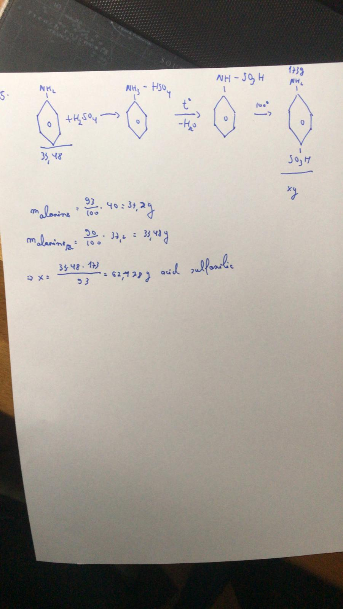

Galata Serban
Probleme rezolvate
1. Scrieți în spațiul liber cuvântul din paranteză care completează corect fiecare afirmație.
a) Reacțiile de nitrare și de sulfonare ale compușilor aromatici sunt reacții de ............ ( adiție / subtituție).
b) În reacția de sulfonare, ............ ( hidrogenul / carbonul ) din nucleul benzenic este substituit cu ............ ( .. NO2 / .. SO3H).
c) Reactantul în recția de nitrare a compușilor aromatici este ............ (H2SO4 / HNO3).
d) Compusul organic rezultat prin nitrarea fenolului cu soluție concentrată de acid azotic, în exces, conține ............ ( 18,34% / 15,21% ) procente de masă, azot.
*e) Acidul sulfanilic se obține prin tratarea ............ ( fenolului / fenilaminei ) cu acid sulfuric ............ ( la rece / temperaturi de 180 - 200oC).
*4. O probă de acid benzoic cu masa de 48,8 kg este tratată cu 80 kg de amestec nitrant ce conține 63% acid azotic, în vederea obținerii acidului m-nitrobenzoic. Din reacție rezultă și acidul 3,5-dinitrobenzoic. Cunoscând Cu=75% și Ct=87,5%, calculați:
a) masa de acid m-nitrobenzoic rezultată din reacție;
b) concentrația procentuală în acid azotic a soluției apoase rezultate după separarea compușilor organici;
5. Calculați masa de acid sulfanilic obținută din 40 g de anilină de puritate 93%, dacă randamentul sulfonării este de 90%.

6. Se consideră schema de reacții:
unde compușii organici D, G si H sunt izomeri de poziție.
Identificați compușii organici A, B, C, D, E, F, G, H și reactanții pentru reacțiile 1 și 2 și scrieți ecuația reacțiilor chimice.